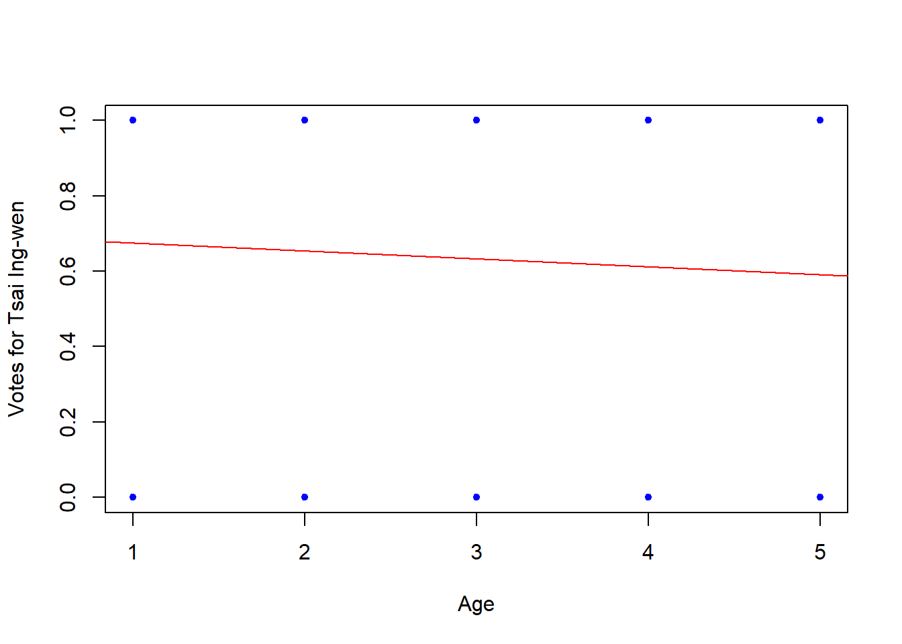
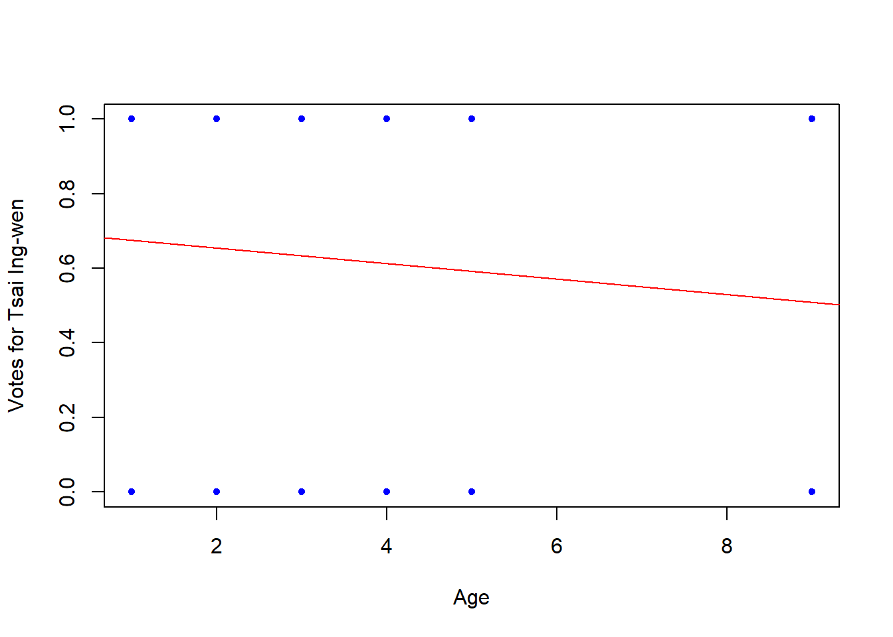
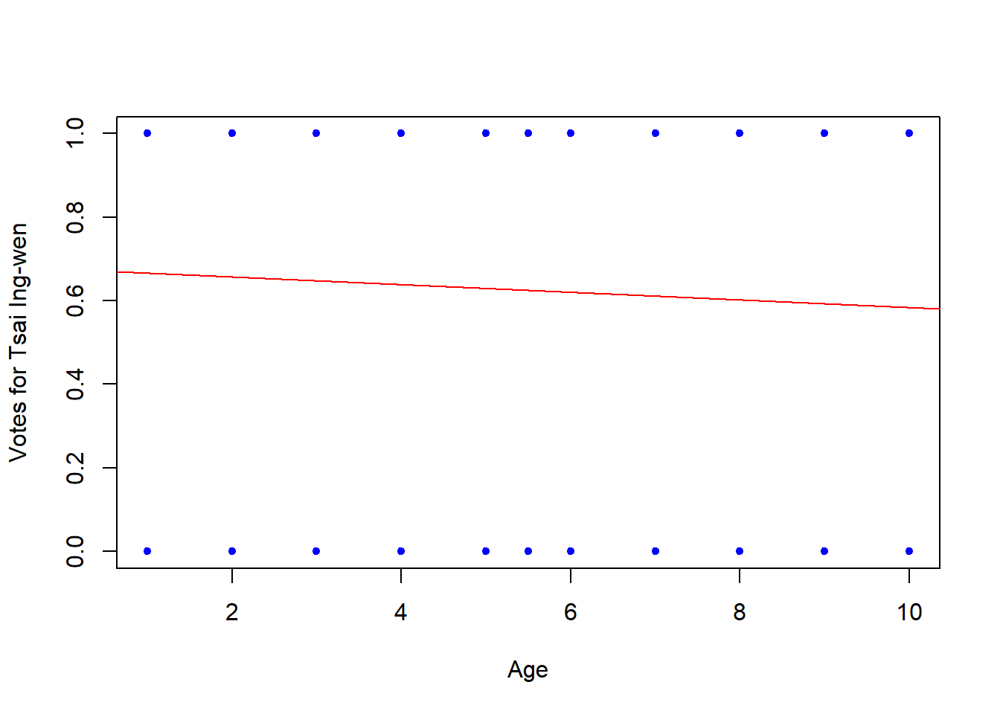

The following objects are masked from 'package:stats':
filter, lag
The following objects are masked from 'package:base':
intersect, setdiff, setequal, union
library(ggplot2)# Read the TEDS2016 datasetTEDS_2016 <-read_stata("https://github.com/datageneration/home/blob/master/DataProgramming/data/TEDS_2016.dta?raw=true")summary(TEDS_2016)
District Sex Age Edu Arear
Min. : 201 Min. :1.000 Min. :1.0 Min. :1.000 Min. :1.000
1st Qu.:1401 1st Qu.:1.000 1st Qu.:2.0 1st Qu.:2.000 1st Qu.:1.000
Median :6406 Median :1.000 Median :3.0 Median :3.000 Median :3.000
Mean :4661 Mean :1.486 Mean :3.3 Mean :3.334 Mean :2.744
3rd Qu.:6604 3rd Qu.:2.000 3rd Qu.:5.0 3rd Qu.:5.000 3rd Qu.:4.000
Max. :6806 Max. :2.000 Max. :5.0 Max. :9.000 Max. :6.000
Career Career8 Ethnic Party
Min. :1.000 Min. :1.000 Min. :1.000 Min. : 1.00
1st Qu.:1.000 1st Qu.:2.000 1st Qu.:1.000 1st Qu.: 5.00
Median :2.000 Median :4.000 Median :1.000 Median : 7.00
Mean :2.683 Mean :3.811 Mean :1.658 Mean :13.02
3rd Qu.:4.000 3rd Qu.:5.000 3rd Qu.:2.000 3rd Qu.:25.00
Max. :5.000 Max. :8.000 Max. :9.000 Max. :26.00
PartyID Tondu Tondu3 nI2
Min. :1.000 Min. :1.000 Min. :1.000 Min. : 1.00
1st Qu.:2.000 1st Qu.:3.000 1st Qu.:2.000 1st Qu.: 1.00
Median :2.000 Median :4.000 Median :2.000 Median : 3.00
Mean :4.522 Mean :4.127 Mean :2.667 Mean :35.13
3rd Qu.:9.000 3rd Qu.:5.000 3rd Qu.:3.000 3rd Qu.:98.00
Max. :9.000 Max. :9.000 Max. :9.000 Max. :98.00
votetsai green votetsai_nm votetsai_all
Min. :0.0000 Min. :0.0000 Min. :0.0000 Min. :0.0000
1st Qu.:0.0000 1st Qu.:0.0000 1st Qu.:0.0000 1st Qu.:0.0000
Median :1.0000 Median :0.0000 Median :1.0000 Median :1.0000
Mean :0.6265 Mean :0.3781 Mean :0.6265 Mean :0.5478
3rd Qu.:1.0000 3rd Qu.:1.0000 3rd Qu.:1.0000 3rd Qu.:1.0000
Max. :1.0000 Max. :1.0000 Max. :1.0000 Max. :1.0000
NA's :429 NA's :429 NA's :248
Independence Unification sq Taiwanese
Min. :0.0000 Min. :0.0000 Min. :0.0000 Min. :0.0000
1st Qu.:0.0000 1st Qu.:0.0000 1st Qu.:0.0000 1st Qu.:0.0000
Median :0.0000 Median :0.0000 Median :1.0000 Median :1.0000
Mean :0.2888 Mean :0.1225 Mean :0.5172 Mean :0.6272
3rd Qu.:1.0000 3rd Qu.:0.0000 3rd Qu.:1.0000 3rd Qu.:1.0000
Max. :1.0000 Max. :1.0000 Max. :1.0000 Max. :1.0000
edu female whitecollar lowincome
Min. :1.000 Min. :0.0000 Min. :0.0000 Min. :1.000
1st Qu.:2.000 1st Qu.:0.0000 1st Qu.:0.0000 1st Qu.:4.000
Median :3.000 Median :0.0000 Median :1.0000 Median :5.000
Mean :3.301 Mean :0.4864 Mean :0.5373 Mean :4.343
3rd Qu.:5.000 3rd Qu.:1.0000 3rd Qu.:1.0000 3rd Qu.:5.000
Max. :5.000 Max. :1.0000 Max. :1.0000 Max. :5.000
NA's :10
income income_nm age KMT
Min. : 1.000 Min. : 1.000 Min. : 20.00 Min. :0.0000
1st Qu.: 3.000 1st Qu.: 2.000 1st Qu.: 35.00 1st Qu.:0.0000
Median : 5.500 Median : 5.000 Median : 49.00 Median :0.0000
Mean : 5.324 Mean : 5.281 Mean : 49.11 Mean :0.2296
3rd Qu.: 7.000 3rd Qu.: 8.000 3rd Qu.: 61.00 3rd Qu.:0.0000
Max. :10.000 Max. :10.000 Max. :100.00 Max. :1.0000
NA's :330
DPP npp noparty pfp
Min. :0.0000 Min. :0.00000 Min. :0.0000 Min. :0.00000
1st Qu.:0.0000 1st Qu.:0.00000 1st Qu.:0.0000 1st Qu.:0.00000
Median :0.0000 Median :0.00000 Median :0.0000 Median :0.00000
Mean :0.3497 Mean :0.02544 Mean :0.3716 Mean :0.01893
3rd Qu.:1.0000 3rd Qu.:0.00000 3rd Qu.:1.0000 3rd Qu.:0.00000
Max. :1.0000 Max. :1.00000 Max. :1.0000 Max. :1.00000
South north Minnan_father Mainland_father
Min. :0.0000 Min. :0.0000 Min. :0.0000 Min. :0.0000
1st Qu.:0.0000 1st Qu.:0.0000 1st Qu.:0.0000 1st Qu.:0.0000
Median :0.0000 Median :0.0000 Median :1.0000 Median :0.0000
Mean :0.4947 Mean :0.4799 Mean :0.7225 Mean :0.1024
3rd Qu.:1.0000 3rd Qu.:1.0000 3rd Qu.:1.0000 3rd Qu.:0.0000
Max. :1.0000 Max. :1.0000 Max. :1.0000 Max. :1.0000
Econ_worse Inequality inequality5 econworse5
Min. :0.0000 Min. :0.0000 Min. :1.000 Min. :1.000
1st Qu.:0.0000 1st Qu.:1.0000 1st Qu.:4.000 1st Qu.:3.000
Median :1.0000 Median :1.0000 Median :5.000 Median :4.000
Mean :0.5544 Mean :0.9355 Mean :4.495 Mean :3.644
3rd Qu.:1.0000 3rd Qu.:1.0000 3rd Qu.:5.000 3rd Qu.:4.000
Max. :1.0000 Max. :1.0000 Max. :5.000 Max. :5.000
Govt_for_public pubwelf5 Govt_dont_care highincome
Min. :0.0000 Min. :1.000 Min. :0.0000 Min. :0.0000
1st Qu.:0.0000 1st Qu.:2.000 1st Qu.:0.0000 1st Qu.:0.0000
Median :0.0000 Median :3.000 Median :0.0000 Median :1.0000
Mean :0.4249 Mean :2.877 Mean :0.4988 Mean :0.5765
3rd Qu.:1.0000 3rd Qu.:4.000 3rd Qu.:1.0000 3rd Qu.:1.0000
Max. :1.0000 Max. :5.000 Max. :1.0000 Max. :1.0000
NA's :330
votekmt votekmt_nm Blue Green No_Party
Min. :0.0000 Min. :0.0000 Min. :0 Min. :0 Min. :0
1st Qu.:0.0000 1st Qu.:0.0000 1st Qu.:0 1st Qu.:0 1st Qu.:0
Median :0.0000 Median :0.0000 Median :0 Median :0 Median :0
Mean :0.2053 Mean :0.2752 Mean :0 Mean :0 Mean :0
3rd Qu.:0.0000 3rd Qu.:1.0000 3rd Qu.:0 3rd Qu.:0 3rd Qu.:0
Max. :1.0000 Max. :1.0000 Max. :0 Max. :0 Max. :0
NA's :429
voteblue voteblue_nm votedpp_1 votekmt_1
Min. :0.0000 Min. :0.0000 Min. :0.0000 Min. :0.0000
1st Qu.:0.0000 1st Qu.:0.0000 1st Qu.:0.0000 1st Qu.:0.0000
Median :0.0000 Median :0.0000 Median :1.0000 Median :0.0000
Mean :0.2787 Mean :0.3735 Mean :0.5256 Mean :0.2309
3rd Qu.:1.0000 3rd Qu.:1.0000 3rd Qu.:1.0000 3rd Qu.:0.0000
Max. :1.0000 Max. :1.0000 Max. :1.0000 Max. :1.0000
NA's :429 NA's :187 NA's :187
Write a function called regplot to plot a regression line
## Creating a function: regplot ## Combine the lm, plot and abline functions to create a regression fit plot function regplot=function(x,y){ fit=lm(y~x)plot(x,y)abline(fit,col="red")}
Run a regplot on the dependent variable using: a. Age b. Education c. Income
1) Age
summary(lm(TEDS_2016$Age~TEDS_2016$votetsai))
Call:
lm(formula = TEDS_2016$Age ~ TEDS_2016$votetsai)
Residuals:
Min 1Q Median 3Q Max
-2.4671 -1.2848 0.5329 1.5329 1.7152
Coefficients:
Estimate Std. Error t value Pr(>|t|)
(Intercept) 3.46709 0.06555 52.890 <2e-16 ***
TEDS_2016$votetsai -0.18228 0.08282 -2.201 0.0279 *
---
Signif. codes: 0 '***' 0.001 '**' 0.01 '*' 0.05 '.' 0.1 ' ' 1
Residual standard error: 1.423 on 1259 degrees of freedom
(429 observations deleted due to missingness)
Multiple R-squared: 0.003833, Adjusted R-squared: 0.003042
F-statistic: 4.844 on 1 and 1259 DF, p-value: 0.02792
## Allow extra room for additional arguments/specificationsregplot=function(x,y,...){ fit=lm(y~x)plot(x,y,...)abline(fit,col="red")} # "..." is called ellipsis, which is designed to take any number of named or unnamed arguments.regplot(TEDS_2016$Age,TEDS_2016$votetsai, xlab="Age",ylab="Votes for Tsai Ing-wen",col="blue",pch=20)

2) Education
summary(lm(TEDS_2016$Edu~TEDS_2016$votetsai))
Call:
lm(formula = TEDS_2016$Edu ~ TEDS_2016$votetsai)
Residuals:
Min 1Q Median 3Q Max
-2.4692 -1.2608 -0.2608 1.5308 5.7392
Coefficients:
Estimate Std. Error t value Pr(>|t|)
(Intercept) 3.46921 0.07053 49.190 <2e-16 ***
TEDS_2016$votetsai -0.20845 0.08910 -2.339 0.0195 *
---
Signif. codes: 0 '***' 0.001 '**' 0.01 '*' 0.05 '.' 0.1 ' ' 1
Residual standard error: 1.531 on 1259 degrees of freedom
(429 observations deleted due to missingness)
Multiple R-squared: 0.004328, Adjusted R-squared: 0.003537
F-statistic: 5.473 on 1 and 1259 DF, p-value: 0.01947
## Allow extra room for additional arguments/specificationsregplot=function(x,y,...){ fit=lm(y~x)plot(x,y,...)abline(fit,col="red")} # "..." is called ellipsis, which is designed to take any number of named or unnamed arguments.regplot(TEDS_2016$Edu,TEDS_2016$votetsai, xlab="Age",ylab="Votes for Tsai Ing-wen",col="blue",pch=20)

3) Income
summary(lm(TEDS_2016$income~TEDS_2016$votetsai))
Call:
lm(formula = TEDS_2016$income ~ TEDS_2016$votetsai)
Residuals:
Min 1Q Median 3Q Max
-4.5329 -2.2304 0.2696 2.4671 4.7696
Coefficients:
Estimate Std. Error t value Pr(>|t|)
(Intercept) 5.5329 0.1291 42.845 <2e-16 ***
TEDS_2016$votetsai -0.3025 0.1632 -1.854 0.0639 .
---
Signif. codes: 0 '***' 0.001 '**' 0.01 '*' 0.05 '.' 0.1 ' ' 1
Residual standard error: 2.803 on 1259 degrees of freedom
(429 observations deleted due to missingness)
Multiple R-squared: 0.002724, Adjusted R-squared: 0.001931
F-statistic: 3.438 on 1 and 1259 DF, p-value: 0.06393
## Allow extra room for additional arguments/specificationsregplot=function(x,y,...){ fit=lm(y~x)plot(x,y,...)abline(fit,col="red")} # "..." is called ellipsis, which is designed to take any number of named or unnamed arguments.regplot(TEDS_2016$income,TEDS_2016$votetsai, xlab="Age",ylab="Votes for Tsai Ing-wen",col="blue",pch=20)

What is the problem? Why?
If we’re attempting to run a linear regression with a categorical variable as the dependent variable, we would likely encounter issues because linear regression is typically used for predicting continuous outcomes. Categorical variables represent discrete categories or groups, not continuous values.
Linear regression assumes that the dependent variable is continuous and normally distributed. When the dependent variable is categorical, it violates these assumptions, leading to unreliable results and invalid interpretations.
If we want to predict or model categorical outcomes, we would typically use techniques like logistic regression (for binary outcomes) or multinomial logistic regression (for multiple categorical outcomes). These methods are specifically designed to handle categorical dependent variables by modeling the probability of belonging to each category.
What can be done to improve prediction of the dependent variable?
Improving the prediction of the dependent variable depends on various factors including the nature of your data, the relationships between variables, and the specific problem you’re trying to solve. Here are several strategies that can generally help improve prediction:
Model Selection: Experiment with different types of models that are suitable for your data and problem. Besides linear regression, consider other algorithms like decision trees, random forests, support vector machines, gradient boosting machines, neural networks, etc. Each model has its strengths and weaknesses, and the best one often depends on the specific characteristics of your data.
Cross-Validation: Use techniques like k-fold cross-validation to evaluate the performance of your model on multiple subsets of the data. This helps in assessing the generalizability of the model and identifying potential overfitting issues.
Ensemble Methods: Combine multiple models to leverage their collective strength and improve prediction accuracy. Ensemble techniques like bagging, boosting, and stacking can often produce better results than individual models.
Addressing Imbalance: If your data is imbalanced (i.e., one class of the dependent variable is significantly more prevalent than others), consider techniques such as oversampling, undersampling, or using specialized algorithms designed to handle imbalanced data.
Regularization: Apply regularization techniques like Lasso or Ridge regression to prevent overfitting and improve the generalization ability of your model.
Data Preprocessing: Ensure your data is clean, standardized, and properly preprocessed before feeding it into the model. This may involve handling missing values, encoding categorical variables, scaling numerical features, etc.